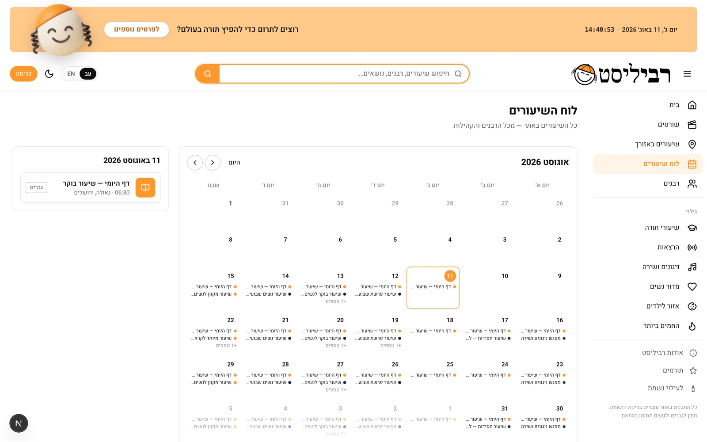
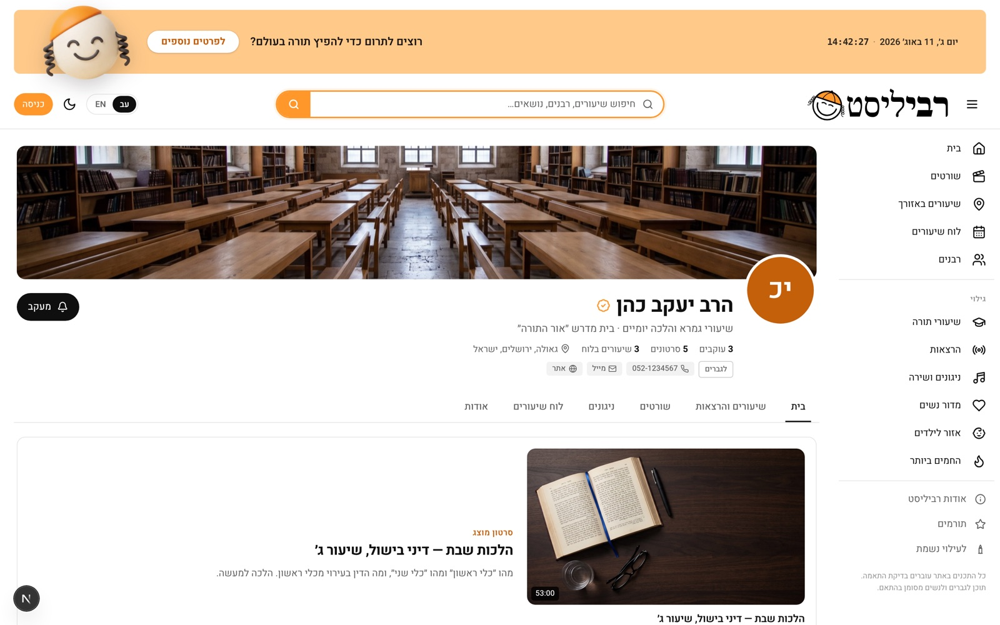
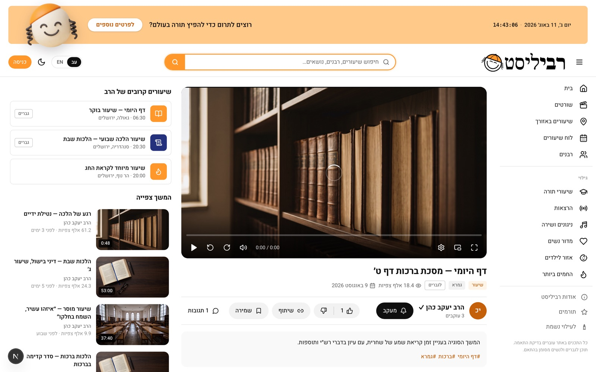
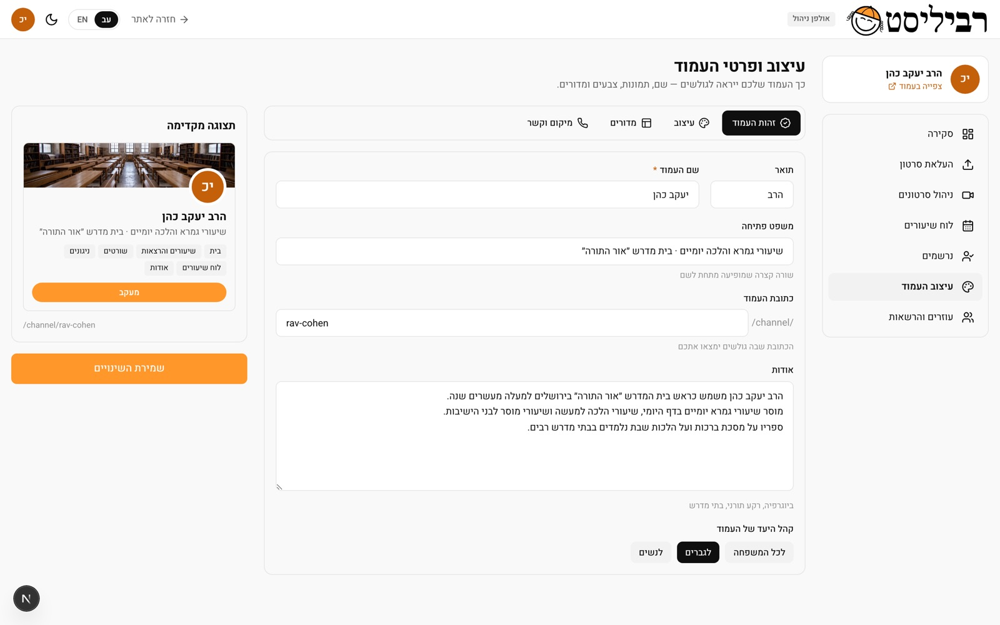
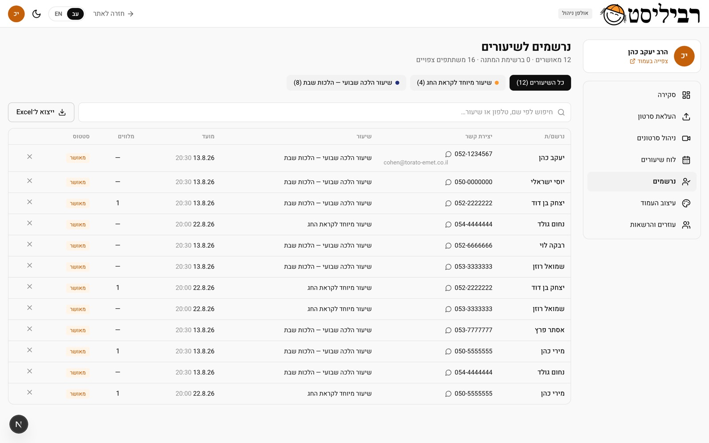

The screens
Discovery
The central decision: the home page isn't a video feed but a local search form. “Find a Torah class in your area” — because the real need is physical, not digital. Quick jumps to Jerusalem, Bnei Brak, Beit Shemesh and Ashdod save a returning user three selections.

The schedule — the core idea
The heart of the product and what separates it from a video platform. An in-person class is an event with a place, a time, a target audience and a registration — so it gets its own data model rather than being treated as a video. Each class carries its own accent colour, so the schedule can be scanned by rabbi or by topic.


Content
Every rabbi gets a page with the sections he chooses to show — videos, shorts, melodies, schedule and about. The rabbi controls what appears, so a rabbi who teaches only Daf Yomi doesn't get a page full of empty sections.


The studio — the rabbi's side
The second product inside the product. The overview shows six metrics in one row, and beside them the two things a rabbi actually does every week — recent videos and upcoming classes. The primary buttons — upload a video, new class, page design — stay fixed at the top of every studio screen.

Control
The page editor shows a live preview while editing — the rabbi sees exactly what a visitor will see, without saving and checking. Registrations aren't a static list but a working tool: who registered, for which class, and when.

